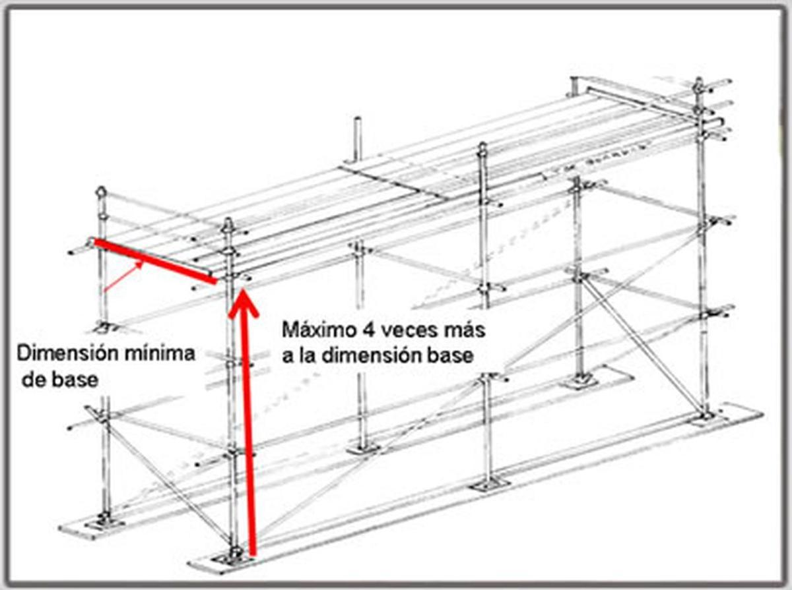
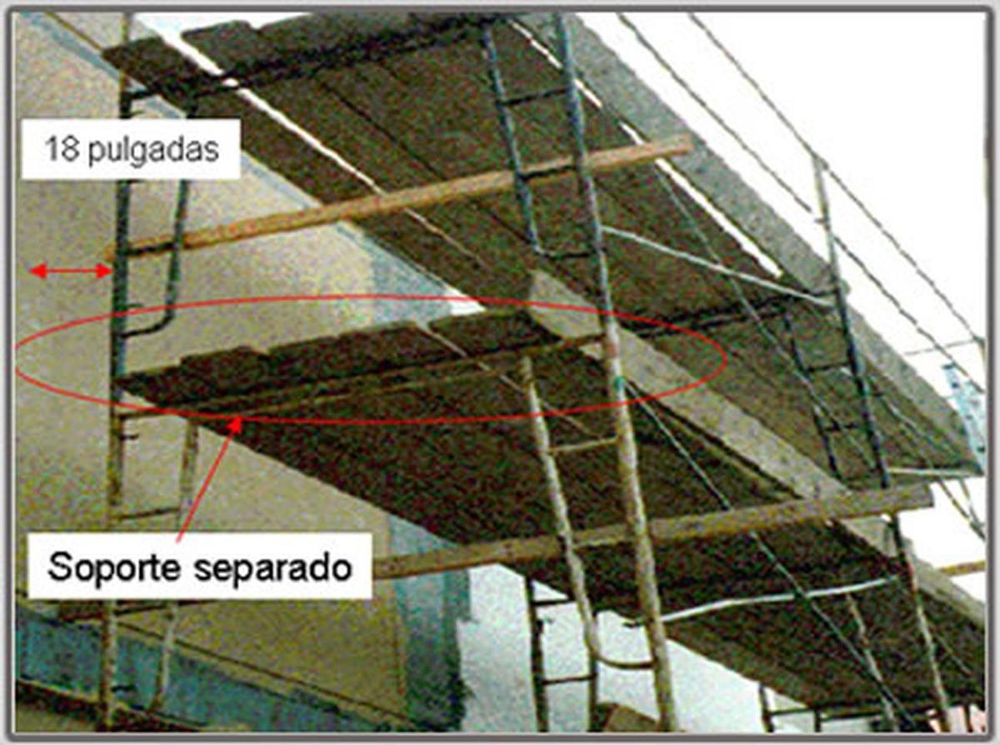
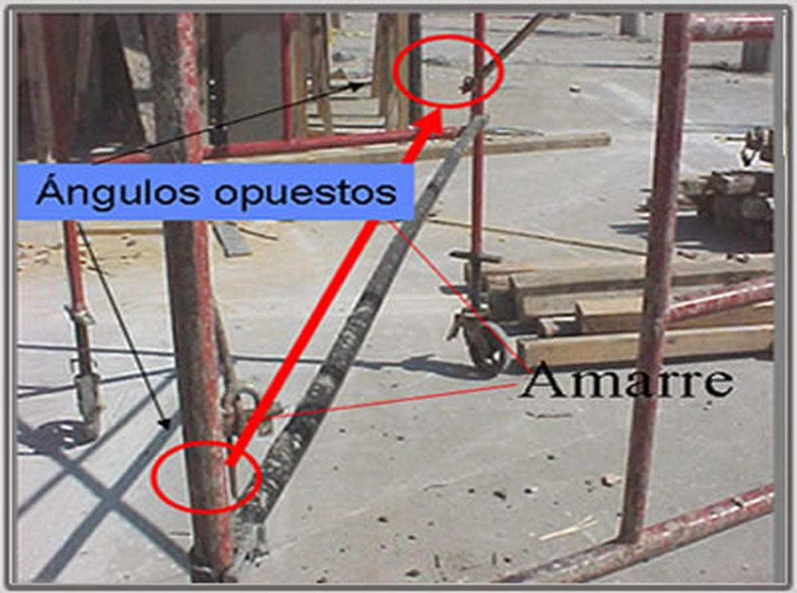
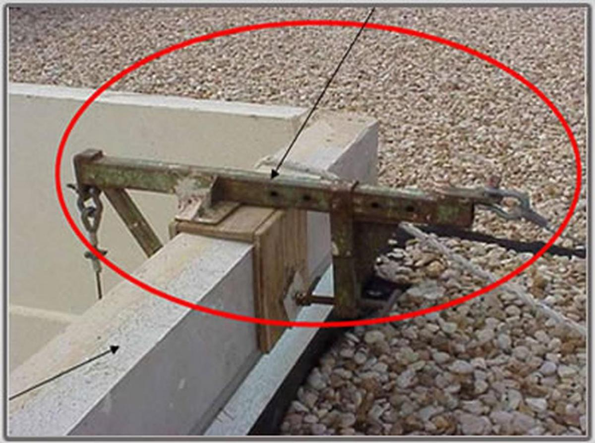

Puntos Básicos para la construcción de un andamio
Al construir un andamio para un proyecto, es importante tener en cuenta estos 4 puntos que permitirán en uso correcto y seguro de los mismos:
Acerque su ratón a las imágenes debajo para saber más.

No debe ser mas de 4 veces más a la dimensión de la base
Reproduce el siguiente audio

Al menos a 18 pulgadas separados de la pared y deben tener un soporte separado. Los soportes y vigas deben ser de madera aprobadas por OSHA.
Reproduce el siguiente audio

Los amarres deben estar de forma perpendicular, en caso de no poderse, deben ser instalados en ángulos opuestos
Reproduce el siguiente audio

Los seguros conectores sirven para sujetar y amarrar un andamio sobre otro
Reproduce el siguiente audio
Riesgos asociados cuando se usan andamios
Estos son algunos de los peligros cuando se tratan con andamios
- Consecuencias en las condiciones atmosféricas.
- Derrumbe de un mal entarimado o caídas de elevaciones.
- Golpes por objetos o escombros que caen.
- Electrocución.
- Sobrecarga.
Reproduce el siguiente audio